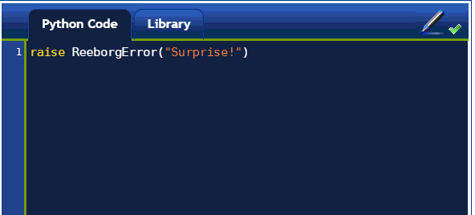
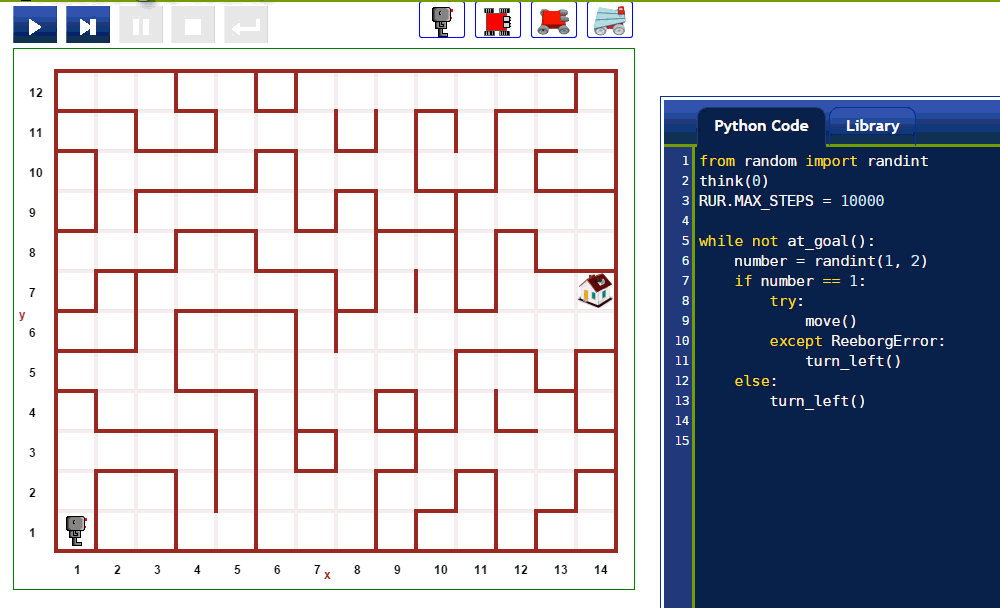

Warning
This document is in the middle of a major revision. Some sections might be missing text, or have French text as placeholder.
Reeborg’s World uses Python’s exceptions (and the Javascript equivalent) a lot.
raise¶Try running the following program:
raise ReeborgError("Surprise!")
You should see something like this:

try, except, and finally¶Raising an exception is another way to control the flow of a program, although a rather abrupt one. If one expect an exception to be raised, the following pattern is usually used:
try:
# code that may
# raise an exception of one type ...
# or possibly different types
except ExceptionName1:
# deal with it
except ExceptionName2:
# deal with this other exception
finally:
# do this at the end
# no matter if we recognized the
# right type of exception.
You might want to try the example illustrated below. To select the maze shown so that you can try things out, you need to make sure you have the Documentation menu loaded and select “Big maze”.

In the above, we import the randint function from
Python’s random module; this allow us to obtain a randomly
selected integer each time we go through the while loop.
We set RUR.MAX_STEPS to a value of 10,000; this variable
controls the maximum number of instructions that
can be executed in a given program; by default, it is set to 1000 but this
would likely not be enough to go through the entire program.
move() instructions can trigger a ReeborgError exception if a wall
is in the way; however, turn_left() instructions can never trigger
an exception.
Other exceptions that ReeborgError might be raised by user’s programs.
For example, the program:
move()
Mov()
will raise a NameError, since Mov is an unknown command.
The program:
move()
move()
will raise an IndentationError. The program:
move)
will raise a SyntaxError; etc.